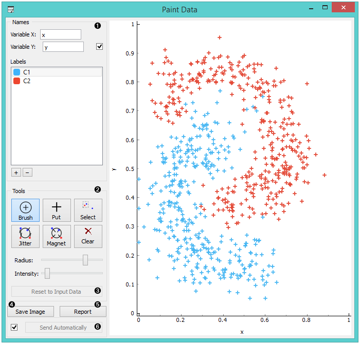
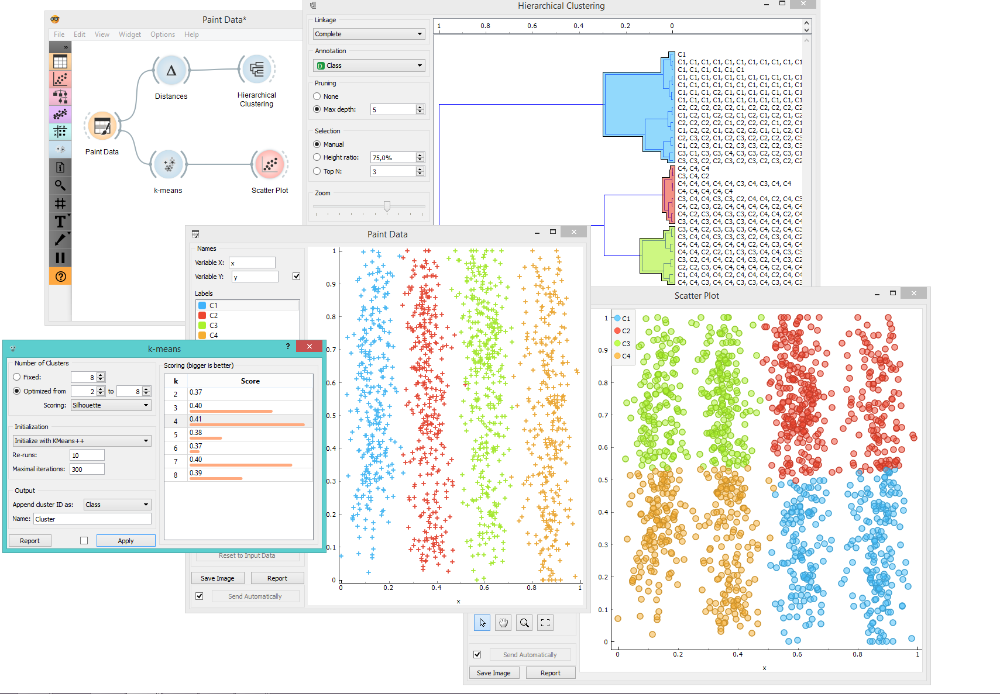

Paint Data
Paints data on a 2D plane. You can place individual data points or use a brush to paint larger datasets.
Outputs
- Data: dataset as painted in the plot
The widget supports the creation of a new dataset by visually placing data points on a two-dimension plane. Data points can be placed on the plane individually (Put) or in a larger number by brushing (Brush). Data points can belong to classes if the data is intended to be used in supervised learning.

- Name the axes and select a class to paint data instances. You can add or remove classes. Use only one class to create classless, unsupervised datasets.
- Drawing tools. Paint data points with Brush (multiple data instances) or Put (individual data instance). Select data points with Select and remove them with the Delete/Backspace key. Reposition data points with Jitter (spread) and Magnet (focus). Use Zoom and scroll to zoom in or out. Below, set the radius and intensity for Brush, Put, Jitter and Magnet tools.
- Reset to Input Data.
- Save Image saves the image to your computer in a .svg or .png format.
- Produce a report.
- Tick the box on the left to automatically commit changes to other widgets. Alternatively, press Send to apply them.
Example
In the example below, we have painted a dataset with 4 classes. Such dataset is great for demonstrating k-means and hierarchical clustering methods. In the screenshot, we see that k-Means, overall, recognizes clusters better than Hierarchical Clustering. It returns a score rank, where the best score (the one with the highest value) means the most likely number of clusters. Hierarchical clustering, however, doesn’t group the right classes together. This is a great tool for learning and exploring statistical concepts.
